Tema 3.B.44
La Unión Bancaria: Pilares y Código normativo único. La Unión de Mercados de Capitales.
Círculo vicioso banca-soberano, trilema financiero, código normativo único, MUS, MUR y FUR, bail-in, EDIS, reparto de riesgos y Unión de Ahorros e Inversiones.
Exclusivo Material exclusivo de victorgutierrezmarcos.es y la app Oposición TCEE · DCE. Puedes usarlo libremente para tu estudio personal. No se autoriza su incorporación a otras plataformas, aplicaciones o servicios. Condiciones de uso.
Introducción
Enganche:
«Empezar la casa por el tejado», dice el refrán. En 1999, la zona del euro estrenó tejado: una moneda y un banco central comunes. Pero los cimientos financieros seguían siendo nacionales: cada país supervisaba, rescataba y garantizaba a sus bancos, y la financiación de las empresas dependía casi solo de esos bancos.
La crisis de 2010-2012 mostró lo que pasa cuando llueve sobre una casa así: Irlanda tuvo que gastar en sus bancos más de un tercio de su PIB, y en 2012 los inversores dudaban a la vez de los bancos y de los Estados del sur.
La pregunta que recorre la exposición es: ¿puede una unión monetaria funcionar sin un sistema financiero común, y cuánto le falta a Europa para tenerlo?
Relevancia:
Financiera: el BCE supervisa directamente 109 grupos bancarios que tienen en torno al 85 % de los activos bancarios de los 21 países de la unión bancaria, unos 29,5 billones de euros.
Macroeconómica: en la zona del euro, los préstamos bancarios son en torno al 73 % de la deuda de las empresas, el doble que en Estados Unidos, y el Informe Draghi calcula que Europa necesita entre 750.000 y 800.000 millones de euros más de inversión al año, que no podrán financiar solo los bancos.
Para España: el BCE supervisa directamente sus grandes grupos bancarios, el Banco de España es parte del Mecanismo Único de Supervisión y el FROB del de Resolución, y el Banco Popular fue en 2017 la primera resolución de la unión bancaria [ver tema 4.A.19] [ver tema 4.A.20].
Contextualización:
Qué es: la unión bancaria es el traslado al nivel europeo de la supervisión y de la resolución de los bancos (y, cuando se complete, de la garantía de sus depósitos), sobre unas normas comunes, el código normativo único. Abarca a los países del euro y a los que se adhieran mediante una cooperación estrecha.
La Unión de Mercados de Capitales (UMC) es el proyecto, lanzado en 2015 y relanzado en 2025 como Unión de Ahorros e Inversiones (UAI), de integrar y hacer más profundos los mercados de acciones, de bonos y de fondos de la Unión, para que las empresas no dependan tanto de los bancos y el ahorro se invierta mejor. Abarca a los 27.
Su lugar en la integración: son las 2 caras de un mismo mercado único financiero, cuya base es la libre circulación de capitales [ver tema 3.B.39], y completan la unión monetaria [ver tema 3.B.43] y su gobernanza económica [ver tema 3.B.45]. La teoría de la regulación financiera que aplican se desarrolla aparte [ver tema 3.B.27].
Problemática:
¿Por qué hizo falta una unión bancaria y por qué nació en 2012?
¿Qué normas comunes la sostienen y cómo funcionan sus pilares?
¿Qué le falta y por qué cuesta tanto completarla?
¿Por qué Europa necesita también unos mercados de capitales integrados y qué se ha conseguido?
Estructura:
La exposición va del porqué al cómo, y de los bancos a los mercados:
I. Origen, fundamentos y código normativo único (I): la crisis que la hizo necesaria, sus razones económicas (el círculo vicioso entre los bancos y el Estado y el trilema financiero) y las normas comunes sobre las que se apoya.
II. Los pilares de la unión bancaria (II): la supervisión única, la resolución única con su fondo y, todavía pendiente, la garantía común de depósitos, con los modelos de la recapitalización interna y del seguro común.
III. La Unión de Mercados de Capitales (III): por qué reparte mejor los riesgos, los planes de 2015 y 2020 y la Unión de Ahorros e Inversiones de 2025.
3.B.44. La Unión Bancaria: Pilares y Código normativo único. La Unión de Mercados de Capitales
Introducción2′30″
I. Origen, fundamentos y código normativo único7′30″
1. Origen: de la crisis a la decisión de 2012
2. ¿Por qué una unión bancaria?
3. El código normativo único
II. Los pilares de la unión bancaria10′30″
1. Primer pilar: el Mecanismo Único de Supervisión
2. Segundo pilar: el Mecanismo Único de Resolución
3. El pilar que falta: la garantía común de depósitos
III. La Unión de Mercados de Capitales8′30″
1. ¿Por qué unos mercados de capitales integrados?
2. La Unión de Mercados de Capitales (2015-2024)
3. La Unión de Ahorros e Inversiones (2025-2026)
Conclusión1′
Notación y siglas. \(s\) es el diferencial de la deuda pública de un país y \(L\) las pérdidas de sus bancos que acaban en el presupuesto; \(\alpha\) mide cuánto sube el diferencial por cada euro de pérdidas que asume el Estado y \(\beta\) cuánto pierden los bancos cuando sube el diferencial. \(\pi\) es la probabilidad de quiebra de un banco, \(R\) lo que recuperan sus acreedores y \(r_f\) el tipo sin riesgo. \(F\) es el tamaño de un fondo de garantía, \(n\) el número de sistemas bancarios que lo comparten y \(\rho\) la correlación de sus pérdidas. MUS y MUR: mecanismos únicos de supervisión y de resolución; JUR y FUR: Junta Única y Fondo Único de Resolución; EDIS (European deposit insurance scheme): sistema europeo de garantía de depósitos; ABE: Autoridad Bancaria Europea; AEVM: Autoridad Europea de Valores y Mercados; MEDE: Mecanismo Europeo de Estabilidad; CRR y CRD: reglamento y directiva de requisitos de capital; BRRD: directiva de reestructuración y resolución bancarias; DGSD: directiva de sistemas de garantía de depósitos; CET1 (common equity tier 1): capital ordinario de nivel 1; APR: activos ponderados por riesgo; MREL: requisito mínimo de fondos propios y pasivos admisibles.
I. Origen, fundamentos y código normativo único
Empezamos por el porqué: qué falló y qué se decidió en 2012.
Conclusión anticipada: en una unión monetaria con bancos supervisados y rescatados por cada Estado, los problemas de los bancos y los del Estado se alimentan entre sí, y un supervisor nacional no tiene en cuenta lo que su banco cuesta a los vecinos. La respuesta fue llevar al nivel europeo la supervisión y la resolución, sobre unas normas comunes para los 27.
El orden del bloque: primero, qué falló y qué se decidió (I.1); después, por qué la respuesta tenía que ser europea, con 2 argumentos de teoría económica (I.2); por último, el marco jurídico común: qué normas forman el código normativo único, en qué competencia de la Unión se apoyan y quién las aprueba (I.3).
I.1. Origen: de la crisis a la decisión de 2012
Antes de la crisis: el mercado único de servicios financieros funcionaba con un pasaporte (un banco autorizado en un Estado opera en todos) y una armonización mínima por directivas, que cada Estado transponía con sus opciones [ver tema 3.B.39]. La supervisión era del país de origen y los rescates, de cada Estado.
La crisis financiera (2007-2009): los Estados rescataron a sus bancos con dinero público y cada uno a su manera; las garantías de depósitos se ampliaron sin coordinación, y los grupos transfronterizos se partieron por fronteras (Fortis, Dexia) [ver tema 3.B.26].
La primera respuesta (2011): siguiendo el Informe de Larosière (2009), se creó el Sistema Europeo de Supervisión Financiera: 3 autoridades sectoriales (la Autoridad Bancaria Europea, la de Valores y Mercados y la de Seguros y Pensiones de Jubilación), que hacen normas técnicas y coordinan a los supervisores nacionales, y la Junta Europea de Riesgo Sistémico, para la vigilancia macroprudencial [ver tema 3.B.27] [ver tema 3.B.36]. La supervisión seguía siendo nacional.
La crisis de la deuda (2010-2012): Grecia, Irlanda y Portugal pidieron ayuda; en 2012, el diferencial de la deuda española a 10 años frente a la alemana llegó a 555 puntos básicos y España pidió hasta 100.000 millones a sus socios para sanear sus cajas de ahorros (recibió unos 41.000 millones, a través del MEDE) [ver tema 3.B.45] [ver tema 4.A.18]. El mercado interbancario se fragmentó por países: empresas iguales pagaban tipos distintos según dónde estaba su banco.
La decisión:
el 26 de junio de 2012, el presidente del Consejo Europeo, Herman Van Rompuy, con los de la Comisión, el Eurogrupo y el BCE, presentó el Informe de los cuatro presidentes, «Hacia una auténtica Unión Económica y Monetaria», con 4 pilares: unión bancaria, fiscal, económica y política; la versión final es del 5 de diciembre de 2012;
el 29 de junio de 2012, la Cumbre del Euro afirmó que era «imperativo romper el círculo vicioso entre los bancos y los soberanos», encargó a la Comisión un mecanismo único de supervisión con el BCE y abrió la puerta a que el MEDE recapitalizara directamente a los bancos una vez existiera;
un mes después, el «haré lo que sea necesario» de Mario Draghi (26 de julio) y las operaciones monetarias de compraventa (OMT) calmaron la deuda; la unión bancaria era la parte estructural de la respuesta [ver tema 3.B.43].
El calendario: el Reglamento del MUS se aprobó en octubre de 2013 y el BCE asumió la supervisión el 4 de noviembre de 2014, tras revisar los balances de 130 bancos; el MUR se aprobó en 2014 y funciona desde 2016. El Informe de los cinco presidentes (22 de junio de 2015) pidió completarla con la garantía común de depósitos y la UMC.
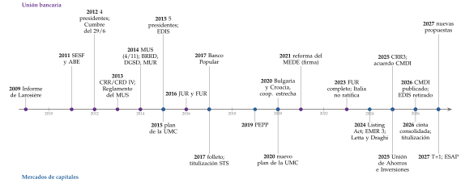
I.2. ¿Por qué una unión bancaria?
Una vez vista la historia, pasamos a las razones económicas. Son 2, y cada una se puede contar con un modelo sencillo: el círculo vicioso entre los bancos y su Estado, que explica por qué la supervisión y los rescates nacionales hacen frágil una unión monetaria, y el trilema financiero, que explica por qué un supervisor nacional no basta en un mercado integrado.
I.2.1. El círculo vicioso banca-soberano en forma reducida
a) Idea
En la zona del euro, la crisis bancaria se convirtió en crisis de deuda y esta volvió a los bancos: es el círculo vicioso banca-soberano (doom loop), cuyo mecanismo se desarrolla con detalle aparte [ver tema 3.B.26].
Aquí lo escribimos en forma reducida, con 2 rectas, para ver con un solo número cuánto amplifica el círculo una perturbación y qué palanca mueve cada pieza de la unión bancaria.
b) Modelo
i) Supuestos
Un país de la unión monetaria, sin banco central propio y sin prestamista de última instancia para su deuda.
El Estado responde de sus bancos: las pérdidas bancarias \(L\) que no absorben los accionistas ni los acreedores acaban en su presupuesto, y su diferencial sube con ellas: \(s=s_0+\alpha L\), con \(\alpha>0\).
Los bancos tienen deuda de su Estado (el sesgo doméstico): cuando sube el diferencial, cae su precio y los bancos pierden: \(L=L_0+\beta s\), con \(\beta>0\).
\(s_0\) y \(L_0\) recogen todo lo demás (la deuda heredada, la calidad del crédito) y \(\alpha\beta<1\), para que el equilibrio exista y sea estable.
ii) Desarrollo
Paso 1: el equilibrio. Sustituyendo la segunda recta en la primera:
\(s=s_0+\alpha(L_0+\beta s)\), luego \(s(1-\alpha\beta)=s_0+\alpha L_0\);
el diferencial y las pérdidas de equilibrio son
\[s^*=\frac{s_0+\alpha L_0}{1-\alpha\beta}\qquad\qquad L^*=\frac{L_0+\beta s_0}{1-\alpha\beta}\tag{1}\]
Paso 2: el multiplicador. Una perturbación a los bancos, \(\Delta L_0\):
sube el diferencial en \(\Delta s^*=\dfrac{\alpha}{1-\alpha\beta}\,\Delta L_0\), más que el efecto directo \(\alpha\,\Delta L_0\);
el factor \(\dfrac{1}{1-\alpha\beta}>1\) es el multiplicador del círculo vicioso: cada vuelta (pérdidas → deuda → pérdidas) añade un poco, y la suma de todas las vueltas es \(1+\alpha\beta+(\alpha\beta)^2+\dots\)
Paso 3: el gráfico. En el plano \((L,s)\), la recta del Estado tiene pendiente \(\alpha\) y la de los bancos, \(1/\beta\); se cortan en \(E\) (gráfico 1):
la perturbación \(\Delta L_0\) desplaza la recta de los bancos hacia la derecha, y el nuevo equilibrio \(E'\) queda más arriba y más a la derecha que el desplazamiento inicial;
con unión bancaria, el Estado responde menos de sus bancos (\(\alpha\) baja): la recta del Estado se aplana y la misma perturbación lleva a \(E''\), con un diferencial mucho menor.
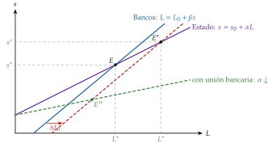
iii) Implicaciones
Si \(\alpha\beta\) se acerca a 1, el multiplicador se dispara; si lo supera, no hay equilibrio estable y cualquier duda se convierte en espiral: es el caso de los países con mucha deuda y bancos cargados de bonos propios.
Cada pieza de la unión bancaria actúa sobre una palanca:
la resolución con recapitalización interna y el Fondo Único bajan \(\alpha\): las pérdidas las pagan primero los accionistas y acreedores y después un fondo común, no el Estado;
la garantía común de depósitos, pendiente, bajaría \(\alpha\) todavía más;
la supervisión común baja \(L_0\) (detecta antes los problemas) y deja de animar a los bancos a comprar deuda de su Estado;
un tratamiento prudencial de la deuda pública o un activo seguro europeo bajarían \(\beta\).
c) Extensiones
El abrazo mortal: Farhi y Tirole (2018) lo derivan con agentes que optimizan: el Estado rescata porque no puede comprometerse a no hacerlo, y los bancos compran deuda propia porque, si el Estado quiebra, ellos también; sin supervisión común, al Estado le conviene que sus bancos compren su deuda1.
Los bonos respaldados por deuda soberana (ESBies): Brunnermeier et al. (2016) proponen titulizar una cartera de bonos de todos los países y dar a los bancos el tramo preferente: \(\beta\) baja sin mutualizar deudas.
d) Evidencia empírica
Tras la garantía irlandesa de 2008, el riesgo de los bancos bajó y el del Estado subió, y desde entonces se movieron juntos; en 2010-2012, los bancos de la periferia compraron más deuda de su Estado justo cuando más riesgo tenía.
El sesgo doméstico ha bajado, pero no ha desaparecido: en los bancos supervisados por el BCE, la deuda pública es el 9,3 % del activo (el 170 % de su CET1) a finales de 2025, y la del propio Estado ha pasado del 39 % de esa cartera en 2014 a en torno al 28 %.
e) Valoración
El modelo resume en un número, el multiplicador, por qué una unión monetaria con bancos nacionales es frágil y por qué la solución es institucional.
Es mecánico: no explica por qué \(\alpha\) y \(\beta\) son altos (eso lo hacen Farhi y Tirole) y no recoge los equilibrios múltiples de la deuda sin prestamista de última instancia [ver tema 3.A.39]. Y deja una pregunta: ¿por qué no basta con que cada país supervise mejor a sus bancos? Responderla es el objeto del modelo siguiente.
I.2.2. El trilema financiero
a) Idea
Schoenmaker (2011) formula el trilema financiero: no se pueden tener a la vez estabilidad financiera, integración financiera y políticas financieras nacionales (supervisión, resolución y garantía de depósitos). Es el equivalente bancario del trilema de la economía abierta [ver tema 3.B.15] [ver tema 3.B.18].
b) Modelo
i) Supuestos
Un banco transfronterizo en dificultades: salvarlo (recapitalizarlo o resolverlo de forma ordenada) cuesta \(C\) y evita un daño \(B\) a la economía de todos los países donde opera, con \(B>C\).
Una parte \(\theta\) de ese beneficio recae en el país de origen y el resto, \(1-\theta\), en los demás; \(\theta\) es menor cuanto más integrado está el mercado.
Supervisión y resolución nacionales: decide el país de origen, que paga todo el coste y solo valora su parte del beneficio.
ii) Desarrollo
Paso 1: la decisión nacional. El país de origen interviene solo si su beneficio supera el coste:
\[\theta B\geq C\quad\text{(nacional)}\qquad\text{frente a}\qquad B\geq C\quad\text{(óptimo común)}\tag{2}\]
Paso 2: la zona de fallo. Si \(\theta<C/B<1\), la intervención es buena para todos, pero el país de origen no la hace: hay infraprovisión de estabilidad financiera. La zona crece cuando \(\theta\) baja, es decir, con la integración.
Paso 3: las 3 salidas (figura 2):
renunciar a la integración: cada país aísla a sus bancos (ring-fencing: capital y liquidez atrapados en cada filial) y \(\theta\) vuelve a ser casi 1;
renunciar a la estabilidad: integración con políticas nacionales, que es lo que tuvo la zona del euro hasta 2012;
renunciar a las políticas nacionales: decidir y pagar en común, con \(\theta=1\) para la unión. Es la unión bancaria.
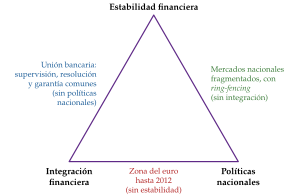
Fuente: elaboración propia a partir de Schoenmaker (2011).
iii) Implicaciones
El problema no es que el supervisor nacional sea peor, sino que no tiene incentivos para valorar lo que pasa fuera; y antes de la crisis, además, tenía incentivos a ser indulgente con sus campeones nacionales (captura del supervisor y tolerancia con los problemas, forbearance) [ver tema 3.A.20].
La supervisión común sin resolución y fondos comunes queda coja: quien decide tiene que ser también quien paga.
c) Evidencia empírica
En 2008, Fortis se partió por países porque sus 3 Estados no se pusieron de acuerdo en el reparto del coste, y Dexia necesitó rescates sucesivos de Bélgica, Francia y Luxemburgo; en 2012, los supervisores nacionales retenían liquidez en sus filiales, y la fragmentación de la zona del euro llegó a que empresas iguales pagaran tipos distintos según su país [ver tema 3.B.39].
d) Valoración
Es un argumento sencillo y potente para la unión bancaria, y explica por qué la Unión eligió un mismo supervisor para todos los bancos grandes.
Pero su conclusión es exigente: si se quiere integración y estabilidad, hay que compartir también los costes (fondo de resolución, respaldo fiscal y garantía de depósitos), y ahí es donde la unión bancaria se ha quedado a medias, como veremos.
I.3. El código normativo único
Antes de ver quién supervisa y quién resuelve, veamos con qué reglas: las de la base de la casa, comunes a los 27.
Qué es
El código normativo único (single rulebook) es el conjunto de normas prudenciales armonizadas que deben cumplir todas las entidades financieras de la Unión. El término lo acuñó el Consejo Europeo en junio de 2009, tras el Informe de Larosière.
Su lógica: reglamentos directamente aplicables en lugar de directivas, y pocas opciones nacionales; que un banco no tenga que cumplir 27 juegos de normas, y que el supervisor común aplique las mismas en todos los países.
Ámbito: los 27, no solo la unión bancaria: es la base del mercado único bancario [ver tema 3.B.39]. Por eso se aprueba con las bases del mercado interior, competencia compartida (sobre todo el art. 114 TFUE; anexo D).
Sus 3 bloques
Requisitos prudenciales: el Reglamento y la Directiva de requisitos de capital (CRR y CRD), que trasponen Basilea III [ver tema 3.B.27]:
el CRR (Reglamento (UE) n.º 575/2013), directamente aplicable, fija el capital mínimo por riesgo de crédito, de mercado y operacional (Pilar 1), la ratio de apalancamiento, las de liquidez (LCR y NSFR), los grandes riesgos y la información al mercado (Pilar 3);
la CRD (Directiva 2013/36/UE), que se transpone, regula la autorización, el gobierno interno, la idoneidad de los gestores, el Pilar 2 de cada banco y los colchones de capital;
el tercer paquete bancario (CRR3, Reglamento (UE) 2024/1623, y CRD VI, Directiva (UE) 2024/1619) aplica la versión final de Basilea III: se aplica desde el 1 de enero de 2025, con un suelo de resultados (output floor) que sube del 50 % en 2025 al 72,5 % en 2030 y transitorios hasta 2032; la CRD VI debía transponerse antes del 10 de enero de 2026 y exige a los bancos de terceros países una presencia física en la Unión desde enero de 2027. La revisión del riesgo de mercado (FRTB) se aplazó 2 veces y se aplica desde enero de 2027, con alivios temporales.
Gestión de crisis: la Directiva de reestructuración y resolución bancarias (BRRD, Directiva 2014/59/UE): planes de recuperación y de resolución, actuación temprana, instrumentos de resolución y recapitalización interna.
Protección de los depositantes: la Directiva de sistemas de garantía de depósitos (DGSD, Directiva 2014/49/UE): 100.000 euros por depositante y entidad, pago en 7 días hábiles y fondos nacionales prefinanciados que debían llegar al 0,8 % de los depósitos garantizados en julio de 2024.
Las 3 normas de crisis (BRRD, el Reglamento del MUR y la DGSD) forman el marco de gestión de crisis y garantía de depósitos (CMDI, crisis management and deposit insurance), reformado en 2026 (II.2.2).
Quién lo aprueba y quién lo completa
Quién aprueba las normas: el CRR, la CRD, la BRRD y la DGSD se adoptan por el procedimiento legislativo ordinario: propone la Comisión y deciden el Parlamento Europeo y el Consejo, este por mayoría cualificada. Los 2 pilares se apoyaron en bases distintas, y eso explica su forma:
el MUS, en el art. 127.6 TFUE, un procedimiento legislativo especial: el Consejo decide por unanimidad, previa consulta al Parlamento y al BCE; por eso es un reglamento del Consejo que encomienda tareas al BCE (II.1);
el MUR, en el art. 114 TFUE, por el procedimiento ordinario; pero la puesta en común de las aportaciones al fondo de resolución se dejó a un acuerdo intergubernamental (II.2).
Quién lo completa: la Autoridad Bancaria Europea (ABE), creada en 2011 (Reglamento (UE) n.º 1093/2010) y con sede en París desde 2019, redacta las normas técnicas de regulación y de ejecución que la Comisión aprueba, emite directrices y preguntas y respuestas, y publica el código normativo único interactivo, que reúne todas esas piezas artículo a artículo [ver tema 3.B.36].
La convergencia de la supervisión: la ABE promueve además prácticas comunes de supervisión: directrices sobre el proceso de revisión supervisora, pruebas de resistencia en toda la Unión cada 2 años y manuales de supervisión. Dentro de la unión bancaria, el BCE aplica un mismo manual de supervisión a todas las entidades significativas.
Lo que el código normativo único no cubre. Quedan en manos nacionales el derecho concursal de los bancos (de ahí que un banco no resoluble se liquide con la ley de cada país), parte de los instrumentos macroprudenciales sobre los prestatarios (límites a la relación préstamo-valor o préstamo-renta), los impuestos y el derecho de sociedades. Y la CRD, como directiva, deja opciones y discrecionalidades nacionales, que el BCE armonizó en parte para los bancos que supervisa con su Reglamento (UE) 2016/445.
Recapitulación del bloque I: la unión bancaria nació en 2012 para romper un círculo vicioso cuyo multiplicador depende de cuánto responde el Estado de sus bancos y de cuánta deuda propia tienen estos; y porque, en un mercado integrado, un supervisor nacional no tiene incentivos para cuidar la estabilidad de todos. Sobre un código normativo común a los 27 se levantan sus pilares, que pasamos a ver.
II. Los pilares de la unión bancaria
Pasamos al segundo bloque: los pilares que se levantan sobre el código normativo único (figura 3).
Conclusión anticipada: la supervisión única funciona y ha dejado bancos más sólidos; la resolución única existe y tiene su fondo lleno, pero se ha usado poco y su respaldo fiscal está bloqueado; y la garantía común de depósitos, propuesta en 2015, nunca se aprobó y la Comisión acaba de retirarla para sustituirla por otra. La unión bancaria es, por eso, una casa con 2 pilares y medio.
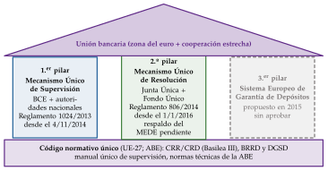
II.1. Primer pilar: el Mecanismo Único de Supervisión
Base jurídica y ámbito
Base jurídica: el artículo 127.6 del TFUE permite encomendar al BCE «tareas específicas» de supervisión prudencial; sobre él se aprobó el Reglamento (UE) n.º 1024/2013 del Consejo, completado por el Reglamento Marco del MUS del BCE (2014). El BCE asumió la supervisión el 4 de noviembre de 2014.
Qué es: el Mecanismo Único de Supervisión (MUS) es el sistema formado por el BCE y las autoridades nacionales de supervisión de los países participantes. El BCE es responsable de su funcionamiento eficaz y coherente.
Quién participa: los 21 países del euro, que desde el 1 de enero de 2026 incluyen a Bulgaria. Los demás pueden unirse por una cooperación estrecha: Bulgaria y Croacia lo hicieron el 1 de octubre de 2020, antes de entrar en el euro (Croacia en 2023 y Bulgaria en 2026), y hoy ningún país está en esa situación.
El reparto de tareas:
el BCE supervisa directamente las entidades significativas: 109 a 1 de septiembre de 2026, que tienen en torno al 85 % de los activos bancarios de los países participantes, con equipos conjuntos de supervisión (joint supervisory teams) de personal del BCE y de las autoridades nacionales;
las autoridades nacionales, como el Banco de España, supervisan las entidades menos significativas (1.828 en 2025, con un 15 % de los activos, y el 77 % de ellas en Alemania y Austria) con los criterios y bajo la vigilancia del BCE, que puede asumir la supervisión directa de cualquiera;
para todas, el BCE concede y retira las licencias bancarias y autoriza la compra de participaciones significativas.
Criterios de significatividad. Una entidad es significativa si cumple al menos uno: activos de más de 30.000 millones de euros; activos de más del 20 % del PIB de su país (salvo que no lleguen a 5.000 millones); estar entre las 3 entidades más grandes de su país; actividad transfronteriza importante (más de 5.000 millones de activos y más del 20 % de activos o pasivos en otro país participante), o haber recibido ayuda directa del MEDE o del FEEF. El BCE también puede declarar significativa una entidad por su relevancia. No hay que confundirlas con las entidades de importancia sistémica, que llevan un colchón de capital adicional [ver tema 3.B.27].
Gobernanza
El Consejo de Supervisión prepara las decisiones: lo forman una presidenta (Claudia Buch desde enero de 2024), un vicepresidente del Comité Ejecutivo del BCE, 4 representantes del BCE y un representante de cada autoridad nacional.
El Consejo de Gobierno del BCE las adopta por no objeción: el proyecto se entiende aprobado si no se opone en 10 días hábiles.
La separación entre la política monetaria y la supervisión es obligatoria (reuniones, personal y orden del día separados), para que el BCE no deje de subir tipos por miedo a dañar a los bancos ni sea indulgente con ellos para proteger la transmisión monetaria; una comisión de mediación resuelve los desacuerdos de los países y un comité administrativo de revisión, los recursos de los bancos.
La rendición de cuentas: ante el Parlamento Europeo y el Eurogrupo, con un informe anual y comparecencias. La política monetaria del BCE se estudia aparte [ver tema 3.B.43].
Cómo supervisa: el PRES
El núcleo de la supervisión es el proceso de revisión y evaluación supervisora (PRES, SREP): cada año, el equipo conjunto evalúa 4 elementos de cada banco:
su modelo de negocio y su rentabilidad;
su gobierno interno y su gestión de riesgos;
sus riesgos para el capital;
sus riesgos de liquidez y de financiación.
De la evaluación a la decisión: el BCE fija a cada banco un requerimiento de Pilar 2 (P2R), obligatorio, por los riesgos que el Pilar 1 no cubre, y una recomendación de Pilar 2 (P2G), una orientación sobre el capital que debe tener para resistir un escenario adverso, además de medidas cualitativas.
Las cifras del último ciclo: para 2026, el requerimiento y la recomendación de CET1 suman de media el 11,2 % de los APR (el 15,6 % de capital total), con un P2R medio del 1,2 % en CET1, para 105 bancos.
La reforma del PRES: tras una evaluación de expertos independientes (2023), el BCE lo ha hecho plurianual y más centrado en los riesgos, con decisiones más cortas, y en 2025-2026 ha simplificado sus procesos. Sus prioridades para 2026-2028 son la resistencia frente a los riesgos geopolíticos y macrofinancieros y la resiliencia operativa y tecnológica.
Resultados
La evaluación global de 2014: antes de empezar, el BCE revisó la calidad de los activos y sometió a una prueba de resistencia a 130 bancos con el 82 % de los activos; 25 tenían un déficit de capital de 24.600 millones de euros.
Más capital y menos morosidad: la ratio CET1 de las entidades significativas ha pasado del 12,7 % en 2015 al 16,0 % a mediados de 2026, y la de préstamos dudosos, del 7,5 % al 1,9 % (gráfico 2); su rentabilidad sobre recursos propios (10,7 %) es la más alta de la serie. Las diferencias entre países siguen ahí: la ratio CET1 va del 13,5 % de España al 20,8 % de Lituania [ver tema 4.A.19].
La prueba de 2023: las turbulencias de Silicon Valley Bank y Credit Suisse apenas tocaron a los bancos de la zona del euro, con más capital, más liquidez y una supervisión de todos los bancos medianos que Estados Unidos había relajado.
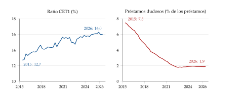
Fuente: BCE, Supervisory Banking Statistics, conjunto SUP. Datos trimestrales hasta el segundo de 2026; préstamos dudosos con los saldos en efectivo en bancos centrales incluidos (sin ellos, 2,17 % en 2026). La muestra de bancos cambia cada trimestre.
Valoración: es el pilar más sólido de la unión bancaria. Sus críticas son el excesivo peso del capital frente a otras medidas, la lentitud del proceso y que los bancos sigan siendo europeos «en vida y nacionales en la muerte»: el BCE supervisa como si el mercado fuera único, pero los Estados siguen retiendo capital y liquidez en las filiales (el debate entre el país de origen y el de acogida) y casi no hay fusiones transfronterizas.
II.2. Segundo pilar: el Mecanismo Único de Resolución
Una vez supervisados en común, falta decidir en común qué pasa cuando un banco quiebra: es el segundo pilar, el que más baja el \(\alpha\) del círculo vicioso.
Por qué un régimen de resolución
El concurso ordinario no sirve para un banco grande: es lento, interrumpe funciones esenciales (pagos, depósitos, crédito) y no atiende a la estabilidad financiera; pero un rescate con dinero público (bail-out) premia a accionistas y acreedores y alimenta el círculo vicioso. La resolución es la tercera vía: un procedimiento administrativo y rápido que mantiene las funciones esenciales y hace que paguen primero los dueños y los acreedores del banco [ver tema 3.B.27].
Arquitectura
Base jurídica: el Reglamento (UE) n.º 806/2014 del Mecanismo Único de Resolución (MUR), que aplica en la unión bancaria las reglas de la BRRD; funciona plenamente desde el 1 de enero de 2016.
La Junta Única de Resolución (JUR), una agencia de la Unión con sede en Bruselas, es la autoridad de resolución de las entidades significativas y de los grupos transfronterizos: 115 bancos en 2025, de los que 92 tienen prevista la resolución si quiebran (al resto se los liquidaría). Las autoridades nacionales (en España, el FROB y el Banco de España) aplican sus decisiones y resuelven las demás entidades.
La decisión en un fin de semana:
el BCE (o la JUR) declara que el banco es inviable o probablemente lo será (failing or likely to fail);
la JUR comprueba que no hay alternativa privada y que la resolución es de interés público; si no lo es, el banco se liquida con la ley de su país;
la JUR aprueba el dispositivo de resolución, la Comisión lo respalda y el Consejo puede objetar en 24 horas.
Los instrumentos: la venta del negocio, el banco puente, la segregación de activos en una sociedad de gestión y la recapitalización interna (bail-in).
El Fondo Único de Resolución y su respaldo
El fondo: el Fondo Único de Resolución (FUR) lo pagan los bancos, con aportaciones en función de su tamaño y su riesgo, y su objetivo es el 1 % de los depósitos garantizados de la unión bancaria. Se constituyó entre 2016 y 2023 y tenía más de 81.000 millones de euros a finales de 2025; como ya alcanzó su objetivo, la JUR no ha cobrado aportaciones en 2024, 2025 ni 2026 (gráfico 3).
Su mutualización: los Estados transfieren las aportaciones al fondo por un acuerdo intergubernamental de mayo de 2014, que repartía el fondo en compartimentos nacionales que se fueron mutualizando (el 40 % el primer año, el 20 % el segundo y el resto en 6 años) hasta ser un fondo común en 2024.
Su límite: el FUR solo puede intervenir cuando los accionistas y acreedores han absorbido pérdidas por al menos el 8 % del pasivo total y los fondos propios, y su aportación no puede pasar del 5 %: es la regla que obliga a la recapitalización interna.
El respaldo común: para una crisis grande, el MEDE prestaría al FUR hasta 68.000 millones de euros, que los bancos devolverían. La reforma del Tratado del MEDE que lo crea se firmó el 27 de enero de 2021, pero no está en vigor porque necesita la ratificación de todos sus miembros y el Parlamento italiano la rechazó el 21 de diciembre de 2023; a finales de 2026 sigue sin ratificarse [ver tema 3.B.45].
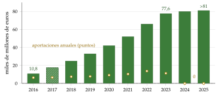
Fuente: JUR, informes anuales y comunicados sobre las aportaciones. Tamaño a final de año; el de 2017 es una estimación (2016 más las aportaciones de 2017); en 2025, «más de 81.000 millones».
II.2.1. Recapitalización interna frente a rescate
a) Idea
Si los acreedores de un banco saben que el Estado los rescatará, no vigilan su riesgo y le prestan barato: es el problema del banco demasiado grande para caer. La recapitalización interna quiere devolverles el riesgo para que lo pongan en precio; el modelo muestra cuánto vale la diferencia y de qué depende que funcione.
b) Modelo
i) Supuestos
Un banco quiebra con probabilidad \(\pi\); si quiebra, sus acreedores recuperan una fracción \(R<1\) de lo que se les debe.
Los acreedores son neutrales al riesgo y exigen la rentabilidad esperada del activo sin riesgo, \(1+r_f\).
2 regímenes: rescate, en el que el Estado paga a los acreedores todo si el banco quiebra, y recapitalización interna, en el que pierden según el orden de prelación.
ii) Desarrollo
Paso 1: con rescate. El acreedor cobra siempre \(1+r\), así que exige \(r=r_f\): la deuda del banco cuesta lo mismo que la del Estado, sea cual sea su riesgo.
Paso 2: con recapitalización interna. El acreedor exige que \((1+r)\big[(1-\pi)+\pi R\big]=1+r_f\), de modo que el diferencial que paga el banco es aproximadamente
\[r-r_f\;\approx\;\pi\,(1-R)\tag{3}\]
la probabilidad de quiebra por la pérdida en caso de quiebra;
cuanto más arriesga el banco (mayor \(\pi\)), más le cuesta financiarse: el riesgo se internaliza.
Paso 3: la subvención implícita. La diferencia entre los 2 regímenes, \(\pi(1-R)\) por euro de deuda, es la subvención implícita del banco demasiado grande para caer: la paga el contribuyente y la cobran los acreedores y los accionistas.
Paso 4: el orden de prelación. Quién pierde y en qué orden lo fija la ley (figura 4):
primero los accionistas (CET1) y los instrumentos de capital adicional (AT1 y T2);
después la deuda subordinada y la deuda ordinaria no garantizada (la sénior no preferente antes que la preferente);
al final, los depósitos, con preferencia: los garantizados y el fondo de garantía, nunca.
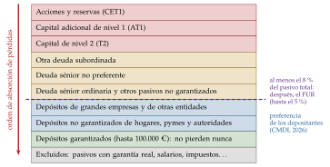
iii) Implicaciones
La credibilidad lo es todo: el día de la quiebra, al Estado le tienta rescatar para evitar el contagio, y los acreedores lo saben. Es un problema de inconsistencia temporal: el compromiso de no rescatar solo es creíble si la recapitalización interna es posible sin desatar un pánico [ver tema 3.A.36].
Por eso hace falta el MREL: cada banco debe tener un requisito mínimo de fondos propios y pasivos admisibles, deuda que se sepa de antemano que absorberá pérdidas, en manos de inversores que puedan soportarlas (no de minoristas). Para los grandes grupos mundiales, el equivalente es la capacidad total de absorción de pérdidas (TLAC) del Consejo de Estabilidad Financiera.
Y por eso el FUR va después: el 8 % de recapitalización interna previa protege al fondo y al contribuyente.
c) Extensiones
Riesgo de contagio: si la deuda que se amortiza la tienen otros bancos o los hogares, la recapitalización interna puede trasladar la crisis; de ahí los límites a quién puede comprar esa deuda y las exclusiones discrecionales de la BRRD.
El orden de prelación importa: en marzo de 2023, Suiza amortizó unos 16.000 millones de francos de AT1 de Credit Suisse mientras los accionistas cobraban algo. El BCE, la JUR y la ABE declararon el 20 de marzo que en la Unión el capital ordinario absorbe pérdidas siempre antes que el AT1.
d) Evidencia empírica
La subvención era grande: el FMI estimó que en 2012 la subvención implícita a los bancos de importancia sistémica mundial llegaba hasta los 70.000 millones de dólares en Estados Unidos y hasta los 300.000 millones en la zona del euro, según la estimación.
Los hechos convencen más que las leyes: los diferenciales de los CDS de los bancos europeos subieron y sus cotizaciones bajaron tras recapitalizaciones internas reales, sobre todo la de Chipre en 2013, y más en los países con poco margen fiscal para rescatar.
El MREL ya está casi cubierto: a finales de 2025, el objetivo medio es el 27,8 % de los APR y el déficit de los bancos de la JUR, 200 millones de euros.
e) Valoración
La recapitalización interna cambia los incentivos en la buena dirección y se ha probado sin contagio en casos medianos.
Pero nunca se ha resuelto así un banco grande de la zona del euro, y la tentación de rescatar persiste mientras el Estado siga siendo quien paga en última instancia y no haya un respaldo común creíble. Además, la resolución depende de una prueba de interés público que, como muestran los casos, deja mucho margen a la liquidación nacional con ayudas de Estado.
Los casos
Banco Popular (7 de junio de 2017): la primera resolución de la unión bancaria. El BCE lo declaró inviable por falta de liquidez; la JUR amortizó acciones y deuda subordinada y vendió la entidad al Santander por 1 euro, sin dinero público ni pérdidas para los depositantes [ver tema 4.A.19].
Banca Popolare di Vicenza y Veneto Banca (23 de junio de 2017): la JUR concluyó que no había interés público, y se liquidaron con la ley italiana y ayudas de Estado: la excepción que muestra el margen de la prueba.
ABLV (2018) y PNB Banka (2019), en Letonia: sin interés público, liquidación nacional; los tribunales de la Unión avalaron las decisiones.
Sberbank Europe (2022): tras la invasión de Ucrania, sus filiales de Croacia y Eslovenia se resolvieron y vendieron en un fin de semana; la matriz austriaca se liquidó. Entre 2023 y 2026 no ha habido nuevos casos.
II.2.2. La reforma de la gestión de crisis (CMDI)
El problema: los bancos medianos y pequeños se quedaban casi siempre fuera de la resolución, porque no tenían MREL suficiente para llegar al 8 % y la liquidación nacional, con dinero público, era más cómoda.
La reforma: propuesta por la Comisión en abril de 2023 y acordada el 25 de junio de 2025, se publicó en abril de 2026 en 3 actos: la Directiva (UE) 2026/806 (BRRD), el Reglamento (UE) 2026/808 (MUR) y la Directiva (UE) 2026/804 (DGSD), que se aplican en lo esencial desde mayo de 2028:
amplía la prueba de interés público, para que la resolución llegue a más bancos medianos, aunque la liquidación sigue siendo la regla;
permite que los fondos de garantía de depósitos financien la transferencia de los depósitos de un banco en resolución, si cuesta menos que pagarlos, y que esa aportación cuente para el 8 %;
crea una preferencia de todos los depositantes en 3 niveles: primero los garantizados y el fondo de garantía; después el resto de los de hogares, pymes y autoridades públicas, y luego los demás depósitos, todos por delante de la deuda ordinaria;
mantiene la garantía de 100.000 euros y protege durante 6 meses saldos temporales mayores (al menos 500.000 euros, por ejemplo tras vender una vivienda).
II.3. El pilar que falta: la garantía común de depósitos
Llegamos al pilar que no existe. Con supervisión y resolución comunes, la garantía de los depósitos sigue siendo nacional: un euro en un banco de un país vale lo que la solvencia de su fondo y, en el fondo, de su Estado.
La propuesta de 2015 y su bloqueo
La propuesta: el 24 de noviembre de 2015, la Comisión propuso un Sistema Europeo de Garantía de Depósitos (EDIS) en 3 fases:
reaseguro (2017-2020): el fondo europeo cubriría una parte de la liquidez y de las pérdidas de un fondo nacional que se agotara;
coaseguro (2020-2024): desde el primer euro, con una parte europea creciente;
seguro pleno (desde 2024): el fondo europeo, gestionado por la JUR y financiado por los bancos con aportaciones según su riesgo, cubriría todo.
El bloqueo: Alemania, los Países Bajos y otros pidieron antes reducir los riesgos heredados (préstamos dudosos y deuda pública en los balances); los países del sur pidieron antes compartirlos. En 2017 la Comisión propuso una versión rebajada en 2 fases; en junio de 2022, el Eurogrupo no logró acordar un plan de trabajo y se limitó a la reforma de la gestión de crisis.
Su retirada: en julio de 2026, la Comisión anunció que sustituiría la propuesta de 2015 por otra, apoyada en el FUR y en los fondos nacionales, que trataría a nivel europeo las quiebras de bancos transfronterizos; su programa de trabajo para 2027 (4 de noviembre de 2026) retira la propuesta, «pendiente desde hace más de 10 años», y anuncia para el primer trimestre de 2027 un paquete legislativo de competitividad y simplificación bancaria para completar la unión bancaria.
II.3.1. Seguro de depósitos común y riesgo moral
a) Idea
Una garantía de depósitos creíble elimina el equilibrio de pánico de Diamond y Dybvig2 [ver tema 3.B.26]. ¿Qué gana la unión haciéndola común, y por qué cuesta tanto aceptarla? El modelo compara el tamaño del fondo que hace falta con fondos nacionales y con uno común, y añade el coste: el riesgo moral.
b) Modelo
i) Supuestos
\(n\) sistemas bancarios del mismo tamaño; las pérdidas que su garantía de depósitos tiene que cubrir en un año tienen desviación típica \(\sigma\) (por unidad de depósitos garantizados) y una correlación \(\rho\) entre países.
Cada fondo se dimensiona para cubrir las pérdidas con la misma probabilidad: su tamaño es \(k\) desviaciones típicas.
Primero, los riesgos no dependen del sistema de garantía; después levantamos ese supuesto.
ii) Desarrollo
Paso 1: el fondo nacional. Cada país necesita \(F_n=k\sigma\).
Paso 2: el fondo común. La pérdida media de los \(n\) países tiene varianza \(\sigma^2\big[\rho+(1-\rho)/n\big]\), así que el fondo común necesita, por país, \(F_c=k\sigma\sqrt{\rho+(1-\rho)/n}\), y
\[\frac{F_c}{F_n}=\sqrt{\rho+\frac{1-\rho}{n}}\;<\;1\quad\text{si }\rho<1\text{ y }n>1\tag{4}\]
Paso 3: el gráfico. La ratio baja con el número de países y sube con la correlación (gráfico 4): con perturbaciones independientes y 20 países, basta un fondo común 4,5 veces menor; con una correlación de 0,5, la ganancia es menor, pero el fondo común sigue necesitando casi un 30 % menos.
Paso 4: el riesgo moral. Ahora los riesgos sí dependen de la garantía: la garantía es una opción de venta que se regala al banco, y su valor sube con el riesgo de sus activos3. Con un fondo común, además, un país que supervisa mal o tolera más riesgo traslada parte de su coste a los demás: hay riesgo moral entre países.
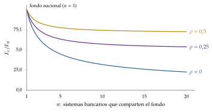
Fuente: elaboración propia. \(F_c/F_n=\sqrt{\rho+(1-\rho)/n}\) para \(\rho=0\); \(0{,}25\) y \(0{,}5\).
iii) Implicaciones
La ganancia: un fondo común da la misma protección con menos dinero, o más protección con el mismo, y rompe el último eslabón entre los depósitos y el Estado: el \(\alpha\) del círculo vicioso.
La condición: el riesgo moral se controla con aportaciones según el riesgo de cada banco, con una supervisión común (que ya existe) y con la reducción previa de los riesgos heredados, sobre todo la deuda pública propia. Ese es el compromiso que no se ha logrado.
c) Extensiones
El modelo de Estados Unidos: la garantía federal (FDIC) cubre 250.000 dólares por depositante y banco desde 2008, y nadie compara un depósito de Texas con uno de Nueva York [ver tema 3.B.26].
Los diseños intermedios: un fondo mixto, en el que los fondos nacionales pierden primero y el europeo solo presta liquidez o cubre lo que exceda, reduce el riesgo moral, pero también la diversificación.
d) Evidencia empírica
Con datos de 2015, un fondo europeo con el 0,8 % de los depósitos garantizados habría bastado para cubrir los pagos incluso en una crisis bancaria grave, y no habría subvenciones cruzadas sistemáticas de unos países a otros si las aportaciones dependen del riesgo; un sistema mixto, con pérdidas primero nacionales, las aumentaría.
La garantía explícita, mal diseñada y con supervisión débil, aumentó la probabilidad de crisis bancarias en 61 países entre 1980 y 1997.
e) Valoración
La teoría está clara: un seguro común diversifica mejor y rompe el círculo vicioso, y su riesgo moral se puede contener. El bloqueo es político: quién paga los riesgos del pasado.
El modelo omite que la ganancia es mayor justo en las crisis, cuando \(\rho\) sube, y que la confianza depende también de que haya un respaldo fiscal detrás. Por eso la discusión va unida a la de la deuda pública en los balances.
El tratamiento regulatorio de la deuda pública
La regla actual: la deuda pública de los países de la Unión en euros pondera 0 en el método estándar y no tiene límite de grandes riesgos; un banco puede concentrar en ella buena parte de su balance sin capital adicional [ver tema 3.B.27].
Las propuestas: ponderaciones de riesgo positivas o recargos por concentración, que bajarían el \(\beta\) del círculo vicioso. El Comité de Basilea las estudió y en diciembre de 2017 concluyó que no había consenso para cambiar la norma; en la Unión, el debate quedó ligado al EDIS y sigue abierto.
El riesgo de la reforma: cambiar la norma en plena tensión podría provocar ventas masivas y subir las primas de riesgo que se quieren proteger; por eso se propone hacerlo de forma gradual y junto con un activo seguro europeo [ver tema 3.B.37].
Recapitulación del bloque II: la supervisión única ha hecho bancos más sólidos; la resolución única tiene reglas y fondo, pero un respaldo bloqueado y poco uso; y la garantía común de depósitos se ha retirado para volver a proponerse. La casa tiene sus pilares de supervisión y de resolución, y le falta el del seguro. Pero un sistema financiero común no son solo bancos: el tercer bloque mira a los mercados.
III. La Unión de Mercados de Capitales
Pasamos al tercer bloque: de los bancos a los mercados. Lo recorremos en el mismo orden que la unión bancaria: por qué hacen falta unos mercados integrados, cómo ha evolucionado el proyecto desde 2015 y qué queda por hacer.
Conclusión anticipada: la financiación de la Unión depende demasiado de los bancos y su ahorro se queda en depósitos; unos mercados de capitales integrados repartirían mejor los riesgos entre países y financiarían la inversión que la Unión necesita. Diez años de planes han dejado muchas normas y pocos cambios de fondo, y en 2025 el proyecto se relanzó como Unión de Ahorros e Inversiones.
Competencias y decisión: los mercados de capitales son mercado interior, una competencia compartida; sus normas se aprueban por el procedimiento legislativo ordinario (art. 114 TFUE) y los supervisan las autoridades nacionales, coordinadas por la Autoridad Europea de Valores y Mercados (AEVM). Lo que más pesa en la integración (la fiscalidad del ahorro, la insolvencia, las pensiones) sigue siendo nacional, y armonizar la fiscalidad exige la unanimidad del Consejo (arts. 113 y 115 TFUE).
III.1. ¿Por qué unos mercados de capitales integrados?
Un sistema financiero basado en los bancos
La financiación de las empresas: en la zona del euro, los préstamos bancarios son el 73 % de la deuda de las sociedades no financieras; en Estados Unidos, todos los préstamos juntos son el 37 % y los de los bancos, el 12 % (gráfico 5).
El tamaño de los mercados: la capitalización bursátil de la Unión es el 71 % de su PIB en 2025, frente al 224 % en Estados Unidos y el 172 % en Japón (gráfico 6).
El ahorro de los hogares: en la zona del euro, el 31 % de sus activos financieros son depósitos, frente al 14 % en Estados Unidos; de los unos 33 billones de euros de ahorro privado de la Unión, unos 300.000 millones al año se invierten fuera, sobre todo en Estados Unidos.
La fragmentación: 27 regímenes de insolvencia, de fiscalidad de los valores y de supervisión de mercados; cientos de plataformas de negociación y cámaras de compensación; y un sesgo doméstico de los inversores que reduce el reparto de riesgos.
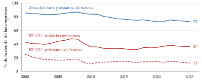
Fuente: BCE (BSI y cuentas sectoriales) y Reserva Federal (Z.1, vía FRED); cálculo propio. Préstamos sobre préstamos más valores de deuda, saldos a final de año. En Estados Unidos, «todos los préstamos» incluye los de entidades no bancarias.
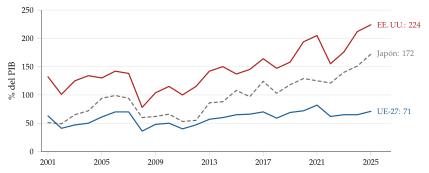
Fuente: Eurostat, cuentas financieras (acciones cotizadas emitidas por residentes), para la UE-27; Banco Mundial, WDI, para Estados Unidos y Japón. Las 2 fuentes dan casi lo mismo para los países que tienen las dos (Alemania: 56 y 57 % en 2025).
Por qué importa
Una rueda de repuesto: un sistema con 2 fuentes de financiación resiste mejor; cuando los bancos dejan de prestar, las empresas pueden emitir bonos o acciones, como hicieron las estadounidenses en 2008-2009.
Financiar la innovación: el capital riesgo y las acciones financian mejor que el crédito los proyectos arriesgados y sin garantías; la Unión tiene muchas menos empresas emergentes que crecen y muchas se van a cotizar a Nueva York [ver tema 3.B.27].
Movilizar el ahorro hacia la inversión: el Informe Draghi calcula una necesidad adicional de inversión de 750.000 a 800.000 millones de euros al año (entre el 4,4 % y el 4,7 % del PIB) en la transición verde, la digital y la defensa, y unos 4 quintos tendrían que venir del sector privado.
Repartir los riesgos entre países: el argumento macroeconómico, que desarrollamos con el modelo siguiente.
III.1.1. El reparto de riesgos entre regiones
a) Idea
En una unión monetaria, un país que sufre una perturbación asimétrica no puede devaluar: necesita otros amortiguadores. Ingram propuso que fueran los mercados financieros: si los españoles tienen acciones alemanas y los alemanes españolas, una caída de la actividad en España se reparte entre los 2 [ver tema 3.B.16]. Asdrubali, Sørensen y Yosha (1996) midieron cuánto de cada perturbación suaviza cada canal.
b) Modelo
i) Supuestos
Una unión de regiones; en cada una, se mide la producción (PIB), la renta que reciben sus residentes (renta nacional), la renta disponible (tras impuestos y transferencias de la unión) y el consumo.
Si no hubiera ningún reparto, el consumo de una región se movería uno a uno con su PIB; con reparto completo, no se movería con él, solo con el agregado de la unión.
ii) Desarrollo
Paso 1: la cadena de rentas. Del PIB al consumo hay 3 escalones, y cada uno es un canal:
del PIB a la renta nacional, el canal de capital: rentas de acciones y bonos de otras regiones;
de la renta nacional a la renta disponible, el canal fiscal: impuestos y transferencias de la unión;
de la renta disponible al consumo, el canal de crédito: ahorro y endeudamiento, también con otras regiones.
Paso 2: la descomposición. Se regresa la variación de cada escalón sobre la del PIB (en diferencias respecto a la media de la unión) y se obtienen las proporciones que suaviza cada canal, que con la parte sin suavizar suman 1:
\[1=\beta_K+\beta_F+\beta_C+\beta_U\tag{5}\]
\(\beta_K\), \(\beta_F\) y \(\beta_C\): lo que suavizan el capital, el presupuesto común y el crédito;
\(\beta_U\): lo que queda sin suavizar y sí afecta al consumo de la región.
iii) Implicaciones
Una unión monetaria aguanta mejor las perturbaciones asimétricas cuanto menor es \(\beta_U\); y lo puede bajar por la vía pública (presupuesto común) o por la privada (mercados integrados), que no exige transferencias entre Estados.
El canal de capital es el más estable, porque comparte el riesgo antes de que llegue; el de crédito, en cambio, puede desaparecer justo en la crisis, cuando los prestamistas se retiran.
c) Evidencia empírica
En Estados Unidos (1963-1990): el canal de capital suaviza el 39 % de las perturbaciones de cada estado, el crédito el 23 % y el presupuesto federal el 13 %; queda sin suavizar el 25 %.
En la zona del euro (1997-2022): el canal de capital suaviza en torno al 10 %, el de crédito en torno al 30 % y el fiscal casi nada; queda sin suavizar en torno al 60 % a 2 años (gráfico 7). Y el canal de crédito se hundió en 2010-2012.
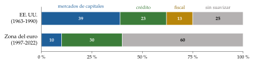
d) Valoración
El modelo da la mejor razón macroeconómica para la UMC: más acciones y bonos de otros países en las carteras amortiguarían las perturbaciones sin presupuesto común.
Pero las comparaciones son delicadas (estados frente a países, otros periodos y métodos) y el sesgo doméstico tiene causas profundas: idioma, información, fiscalidad y derecho concursal distintos. Por eso la UMC es una tarea de muchas normas pequeñas, como veremos.
III.2. La Unión de Mercados de Capitales (2015-2024)
Los 2 planes
El plan de 2015: la Comisión presidida por Jean-Claude Juncker lo presentó el 30 de septiembre de 2015, con más de 30 acciones para diversificar la financiación de las empresas, sobre todo de las pymes, facilitar la inversión a largo plazo y en infraestructuras, y aumentar el reparto transfronterizo de riesgos. Su revisión de 2017 añadió prioridades tras el anuncio del Brexit, que se llevaba el mayor centro financiero de la Unión.
El plan de 2020: 16 acciones con 3 objetivos:
una recuperación verde, digital e inclusiva, con más financiación para las empresas;
que la Unión sea un lugar más seguro para ahorrar e invertir a largo plazo;
integrar los mercados nacionales en un verdadero mercado único.
Los logros
Para las empresas:
la titulización simple, transparente y normalizada (STS, Reglamento (UE) 2017/2402, desde 2019), con menos capital para los bancos que la compran, para que puedan vender préstamos y prestar más;
el nuevo Reglamento de folletos (2017/1129) y la Ley de Admisión a Cotización (Listing Act, Reglamento (UE) 2024/2809 y 2 directivas), que abaratan salir a bolsa y permiten acciones con voto múltiple, aplicables entre 2026 y diciembre de 2026;
los fondos de inversión a largo plazo europeos (ELTIF), reformados en 2023 para abrirlos a minoristas, y el régimen europeo de financiación participativa (2021);
el punto de acceso único europeo (ESAP), que reunirá la información financiera y de sostenibilidad de las empresas, abierto al público en julio de 2027.
Para los ahorradores: el producto paneuropeo de pensiones individuales (PEPP, desde 2022), con apenas 2 proveedores, y la estrategia de inversión minorista, acordada en diciembre de 2025.
Para la integración de los mercados:
la cinta consolidada (consolidated tape), creada con la reforma de MiFIR de 2024: un solo flujo de precios y volúmenes de todas las plataformas; la de acciones funciona desde septiembre de 2026 y la de bonos tiene proveedor elegido desde 2025;
EMIR 3 (2024): obliga a las entidades de la Unión a mantener una «cuenta activa» en una cámara de compensación europea para los derivados en euros más importantes, y reduce la dependencia de las de Londres;
la liquidación en T+1 (un día hábil tras la operación) desde el 11 de octubre de 2027; la Directiva FASTER de retenciones fiscales (2030) y la de insolvencia, aprobada en 2026.
El balance
Diez años después, las normas existen, pero los mercados siguen fragmentados: la financiación de mercado de las empresas apenas ha subido, las titulizaciones no se han recuperado y la supervisión de los mercados sigue en manos nacionales. Lo que faltaba no eran normas técnicas, sino decisiones políticas: supervisión común, fiscalidad, insolvencia, pensiones.
La UMC verde. Dentro del plan de 2018 de finanzas sostenibles se aprobaron la taxonomía de actividades sostenibles (Reglamento (UE) 2020/852), la norma de divulgación de los productos financieros (Reglamento (UE) 2019/2088) y el estándar de bono verde europeo (Reglamento (UE) 2023/2631). Los bonos verdes de la Unión, emitidos para el NextGenerationEU, han hecho de ella uno de los mayores emisores verdes del mundo [ver tema 3.B.37]. En 2025-2026, la simplificación ómnibus redujo el alcance de las obligaciones de información de sostenibilidad.
III.3. La Unión de Ahorros e Inversiones (2025-2026)
Los informes de 2024
El Informe Letta (abril de 2024), sobre el mercado único, propuso transformar la UMC en una Unión de Ahorros e Inversiones: el problema no es solo de mercados, sino de cómo se canaliza el ahorro de los europeos hacia la inversión en Europa [ver tema 3.B.39].
El Informe Draghi (septiembre de 2024), sobre la competitividad, cuantificó la brecha de inversión y pidió completar la UMC con una supervisión centralizada de los mercados en la AEVM, más titulización y unos sistemas de pensiones que inviertan.
La estrategia de marzo de 2025
El 19 de marzo de 2025, la Comisión presentó la Unión de Ahorros e Inversiones, con 4 líneas:
ciudadanos y ahorro: que los hogares, con unos 10 billones de euros en depósitos, inviertan más en los mercados;
inversión y financiación: titulización, capital riesgo, inversión de los inversores institucionales en acciones;
integración y escala: plataformas, poscontratación y fondos que operen en toda la Unión;
supervisión: más eficaz y más convergente.
Abarca también a los bancos: la competitividad bancaria y la culminación de la unión bancaria son parte de la estrategia.
Las medidas de 2025-2026
Cuentas de ahorro e inversión: una recomendación de 30 de septiembre de 2025 pide a los Estados cuentas sencillas, digitales y con ventajas fiscales para invertir en valores, con el modelo sueco como referencia, junto con una estrategia de educación financiera.
Titulización: la propuesta de junio de 2025 rebaja el capital y los requisitos de información; el Consejo y el Parlamento la acordaron el 21 de octubre de 2026, con una nueva categoría de titulizaciones «resilientes».
Pensiones complementarias (noviembre de 2025): una recomendación sobre la adscripción automática a planes de empleo y la revisión de la directiva de fondos de pensiones de empleo y del PEPP [ver tema 4.B.24].
Integración y supervisión de los mercados (4 de diciembre de 2025): pasaporte para las plataformas y los depositarios centrales y, sobre todo, supervisión directa de la AEVM de las plataformas de negociación significativas, de las cámaras de compensación, de los depositarios centrales y de los proveedores de criptoactivos. El Consejo fijó su posición el 9 de octubre de 2026, con la supervisión de los criptoactivos limitada a los más grandes; falta la del Parlamento [ver tema 3.B.36].
El 28.º régimen: una forma societaria europea opcional para empresas innovadoras, «EU Inc.», propuesta en marzo de 2026.
El respaldo político: la Cumbre del Euro de marzo de 2026 se comprometió a completar la UAI y pidió acabar la legislación del euro digital.
El euro digital como infraestructura
Un euro digital emitido por el BCE sería una infraestructura común de pagos para toda la zona, que hoy depende de esquemas de tarjetas no europeos, y una base para liquidar operaciones con activos digitales.
La Comisión lo propuso en junio de 2023; el Consejo fijó su posición en diciembre de 2025 y el Parlamento en julio de 2026, y desde entonces negocian; el BCE prepara una emisión posible en 2029 si la ley se aprueba en 2026. Su diseño monetario se trata aparte [ver tema 3.B.43].
Valoración
Lo bueno: el enfoque desde el ahorro y la inversión da al proyecto una razón política que la UMC no tenía, y por primera vez está sobre la mesa la supervisión europea de los mercados.
Lo difícil: las piezas que más importan dependen de los Estados (fiscalidad, pensiones, insolvencia, supervisión) y avanzan por unanimidad o con resistencias de los mercados pequeños, que temen perder sus plazas financieras. El riesgo es repetir la UMC: muchas normas y pocos cambios.
Recapitulación del bloque III: la Unión tiene mucho ahorro, poca inversión en sus mercados y un sistema basado en los bancos que reparte mal los riesgos entre países. La UMC creó las normas; la UAI intenta cambiar el comportamiento del ahorro y la arquitectura de la supervisión.
Conclusión
Recapitulación: En conclusión, la unión bancaria nació en 2012 para romper el círculo vicioso entre los bancos y los Estados y para resolver el trilema financiero de un mercado integrado con políticas nacionales. Sobre un código normativo único se levantan la supervisión del BCE, que ha hecho bancos más sólidos, y la resolución de la JUR, con un fondo de más de 81.000 millones; le falta la garantía común de depósitos.
La UMC y la UAI buscan el otro motor de la financiación, los mercados, que repartirían mejor los riesgos entre países y llevarían el ahorro a la inversión.
Relevancia:
De ellas depende que la política monetaria llegue igual a todos los países, que una crisis bancaria no se convierta en una crisis de deuda y que la Unión financie su transición verde, digital y de defensa.
Extensiones:
La teoría de la regulación [ver tema 3.B.27], las crisis y el círculo vicioso [ver tema 3.B.26], la integración monetaria [ver tema 3.B.16], el euro y el BCE [ver tema 3.B.43], la gobernanza y el MEDE [ver tema 3.B.45], el mercado único [ver tema 3.B.39] y, en España, las entidades de crédito y los mercados de valores [ver tema 4.A.19] [ver tema 4.A.20].
Opinión:
El orden importa: completar la garantía común junto con una reducción gradual del sesgo doméstico en deuda pública, y llevar a la AEVM la supervisión de los mercados grandes. Sin seguro común, la unión bancaria sigue siendo vulnerable; sin mercados integrados, el euro reparte mal los riesgos.
Idea final:
Volvamos al refrán: el euro empezó la casa por el tejado. Desde 2012 Europa ha ido levantando los cimientos desde abajo, primero las normas, después la supervisión y la resolución, y ahora los mercados. Una unión monetaria puede funcionar sin un sistema financiero común, pero solo cuando hace buen tiempo; la casa estará terminada cuando el último pilar, el seguro de los depósitos, sostenga el tejado.
A. Anexo: el círculo vicioso y el multiplicador paso a paso
El sistema: \(s=s_0+\alpha L\) y \(L=L_0+\beta s\), con \(\alpha,\beta>0\).
Solución: sustituyendo, \(s=s_0+\alpha L_0+\alpha\beta s\), luego \(s^*=\dfrac{s_0+\alpha L_0}{1-\alpha\beta}\) y \(L^*=L_0+\beta s^*=\dfrac{L_0+\beta s_0}{1-\alpha\beta}\).
Estabilidad: con un ajuste gradual \(s_{t+1}=s_0+\alpha L_t\) y \(L_t=L_0+\beta s_t\), se tiene \(s_{t+1}=s_0+\alpha L_0+\alpha\beta s_t\), que converge si y solo si \(\alpha\beta<1\). Si \(\alpha\beta\geq 1\), cualquier desviación crece: la espiral.
Multiplicadores: \(\dfrac{\partial s^*}{\partial L_0}=\dfrac{\alpha}{1-\alpha\beta}\), \(\dfrac{\partial s^*}{\partial s_0}=\dfrac{1}{1-\alpha\beta}\), y \(\dfrac{\partial s^*}{\partial\alpha}=\dfrac{L_0+\beta s_0}{(1-\alpha\beta)^2}>0\): cualquier reducción de \(\alpha\) (resolución, fondo común, garantía común) baja el diferencial de equilibrio, y tanto más cuanto mayor es \(\beta\).∎
B. Anexo: los requisitos de capital y de pasivos en la Unión
Pilar 1: CET1 del 4,5 %, capital de nivel 1 del 6 % y capital total del 8 % de los APR; ratio de apalancamiento del 3 % del capital de nivel 1 sobre la exposición total [ver tema 3.B.27].
Pilar 2: el requerimiento (P2R) y la recomendación (P2G) de cada banco, que fija el BCE en el PRES.
Colchones, en CET1: de conservación (2,5 %), anticíclico (0-2,5 % o más), de entidades de importancia sistémica mundial (1-3,5 %) u otras (hasta el 3 %) y contra riesgos sistémicos. Si un banco no los cubre, tiene límites al reparto de dividendos.
MREL y TLAC: la autoridad de resolución fija a cada banco un MREL en porcentaje de los APR y de la exposición total, suficiente para absorber pérdidas y recapitalizarlo; los bancos de importancia sistémica mundial cumplen además la TLAC del Consejo de Estabilidad Financiera (18 % de los APR y 6,75 % de la exposición), con una parte subordinada.
El suelo de resultados: los APR calculados con modelos internos no pueden bajar del 72,5 % de los del método estándar desde 2030 (50 % en 2025, 55 % en 2026, y así hasta 72,5 %).
C. Anexo: conceptos
Inviable o probablemente inviable (failing or likely to fail): la entidad incumple o incumplirá los requisitos de autorización, sus activos son o serán menores que sus pasivos, no puede o no podrá pagar sus deudas, o necesita ayudas públicas extraordinarias.
Interés público: la resolución es necesaria para mantener funciones esenciales, evitar el contagio, proteger los fondos públicos y a los depositantes, y lo consigue mejor que la liquidación.
Principio de que ningún acreedor salga peor parado: ningún accionista ni acreedor puede perder en la resolución más de lo que habría perdido en una liquidación ordinaria.
Recapitalización precautoria: ayuda pública excepcional a un banco solvente para cubrir el déficit de una prueba de resistencia, sin activar la resolución (Monte dei Paschi, 2017).
Cooperación estrecha: adhesión al MUS (y al MUR) de un Estado de la Unión que no tiene el euro; las autoridades nacionales aplican las instrucciones del BCE.
Pasaporte: un banco o una empresa de servicios de inversión autorizados en un Estado operan en todos con libre prestación de servicios o con sucursales.
Cinta consolidada: flujo único de datos de precios y volúmenes de todas las plataformas de negociación de la Unión.
D. Anexo: el reparto de competencias de la Unión
La regla de partida es la atribución: la Unión solo tiene las competencias que le dan los Tratados, y las demás siguen siendo de los Estados (arts. 4.1 y 5 TUE). El art. 2 TFUE las ordena en categorías según quién legisla, y los arts. 3 a 6 enumeran los ámbitos de cada una (figura 5). Las ejerce con proporcionalidad (no más de lo necesario) y, fuera de las exclusivas, con subsidiariedad (solo si el objetivo se alcanza mejor en común).
Exclusivas y compartidas: en las exclusivas (art. 3) solo legisla la Unión; los Estados, solo si ella los faculta o para aplicar sus actos. En las compartidas (art. 4), la categoría residual, legislan las 2, pero lo que regula un acto de la Unión deja de estar disponible para los Estados: es la preferencia u ocupación del campo (art. 2.2 y Protocolo n.º 25), que solo alcanza a lo que el acto regula. En investigación, espacio, cooperación para el desarrollo y ayuda humanitaria son paralelas: la acción de la Unión no impide la de los Estados (art. 4.3 y 4.4).
Coordinación y apoyo: en las políticas económicas y de empleo (art. 5) la política sigue siendo de los Estados y la Unión la coordina con orientaciones del Consejo; en los ámbitos del art. 6 (salud, industria, cultura, turismo, educación, protección civil, cooperación administrativa) la Unión solo apoya, coordina o complementa, sin armonizar las leyes nacionales. La PESC tiene un régimen propio, intergubernamental, con unanimidad y sin actos legislativos (art. 24 TUE).
Dónde está este tema: el código normativo único, el Mecanismo Único de Resolución y la Unión de Mercados de Capitales se aprueban con las bases del mercado interior, competencia compartida (art. 4.2.a; sobre todo el art. 114 TFUE). La supervisión del BCE se apoya en otra base: el art. 127.6, en el capítulo de la política monetaria del euro, exclusiva (art. 3.1.c), permite encomendarle «tareas específicas» de supervisión prudencial.
Qué se deduce: el código normativo único vale para los 27, porque es mercado interior; la supervisión y la resolución comunes, en cambio, cubren solo la zona del euro y a quien se una a ella con una cooperación estrecha. Lo que falta, el seguro de depósitos común, choca con la unanimidad política más que con la base jurídica.
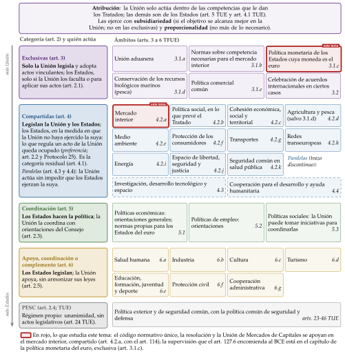
Fuente: elaboración propia a partir de los arts. 2 a 6 del TFUE y de los arts. 4, 5 y 24 del TUE.
E. Anexo: preguntas de test
Preguntas tipo test del primer ejercicio: simulador de test.
Bibliografía
Fuentes esenciales
Otras referencias
Jean Tirole recibió el Premio Nobel de Economía en 2014 «por su análisis del poder de mercado y de la regulación».↩︎
Douglas Diamond y Philip Dybvig recibieron el Premio Nobel de Economía en 2022, con Ben Bernanke, «por sus investigaciones sobre los bancos y las crisis financieras».↩︎
Robert Merton recibió el Premio Nobel de Economía en 1997, con Myron Scholes, «por un nuevo método para determinar el valor de los derivados».↩︎